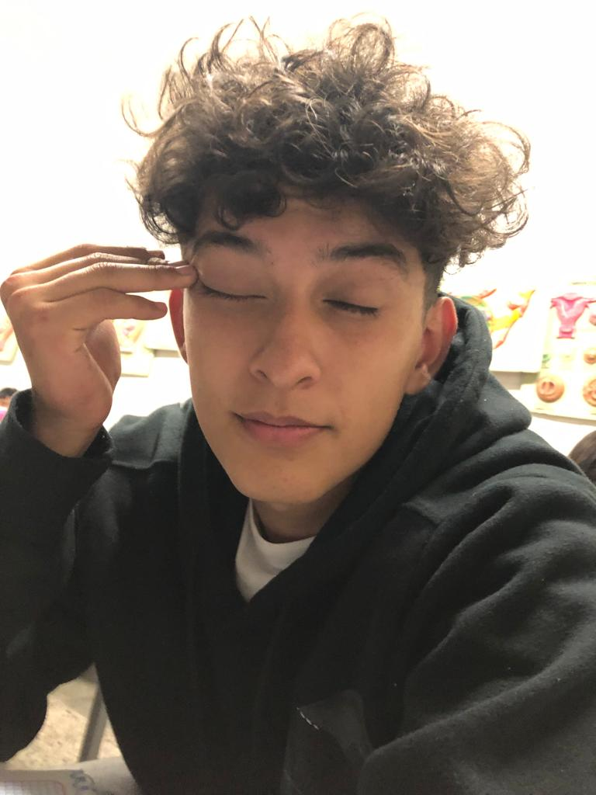

José Manuel Vela Gómez

Actualmente estoy interesado en expandir mis conocimientos
sobre la programación, aunque a veces no entiendo todo, con
repaso logro entenderle.
También estoy interesado en mejorar
en mis pasatiempos como los videojuegos y el basketball.
Me gustan mucho los gatos, seguidos de los
perros. Tengo 2 gatos y un perro, llamados
Benita y Umi como gatos, y Ziva
como mi
perrito.
Arrastra tu mouse o curso sobre
este cuadrado para poder
ver una foto de Umi.
P.D.(Umi es el blanco)
| Personaje | Foto | ¿Por qué? |
|---|---|---|
| Rayo McQueen |

|
Porque me gusta el desarrollo que tiene en la pelicula, enseñandonos que hay que ser humildes. |
Gato con Botas |

|
Porque nos enseña que hay que dejar a lado nuestro ego y que es mejor pensar en nosotros y en los demás. |
Mis peliculas favoritas


Mis comidas favoritas